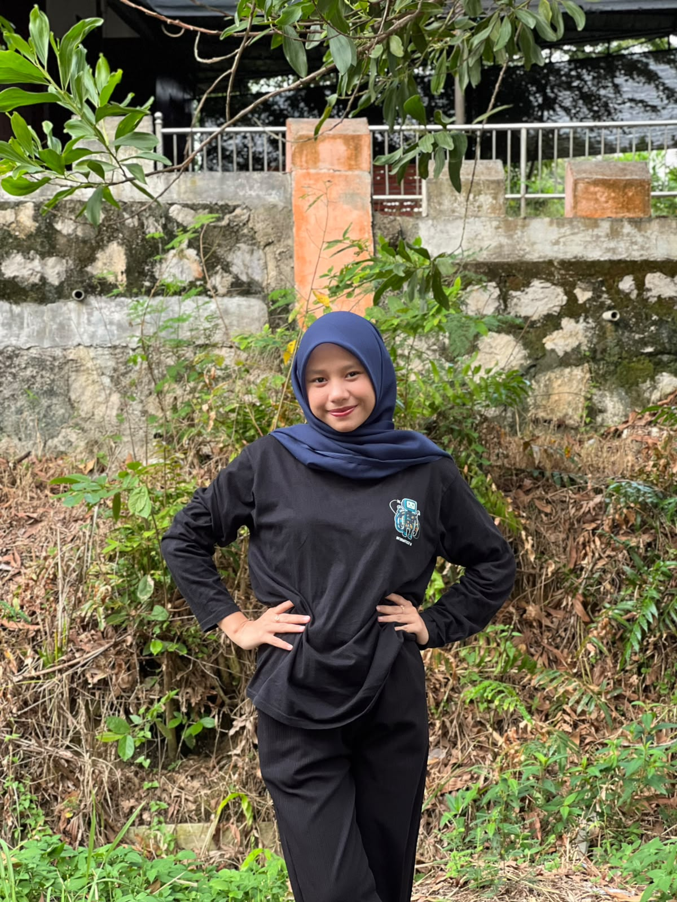
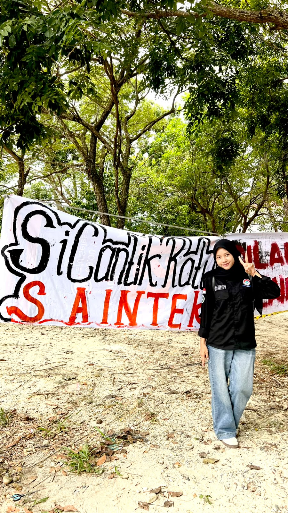
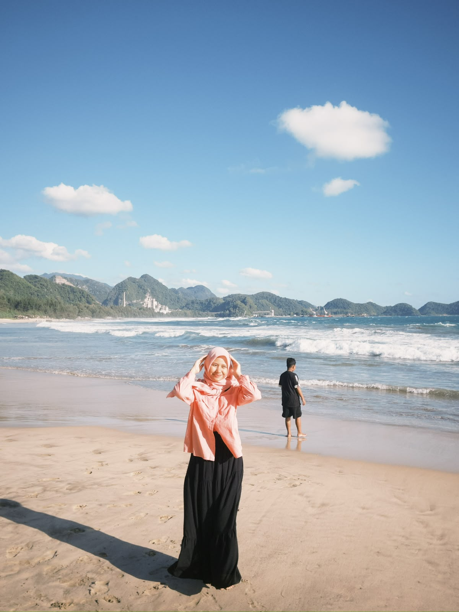
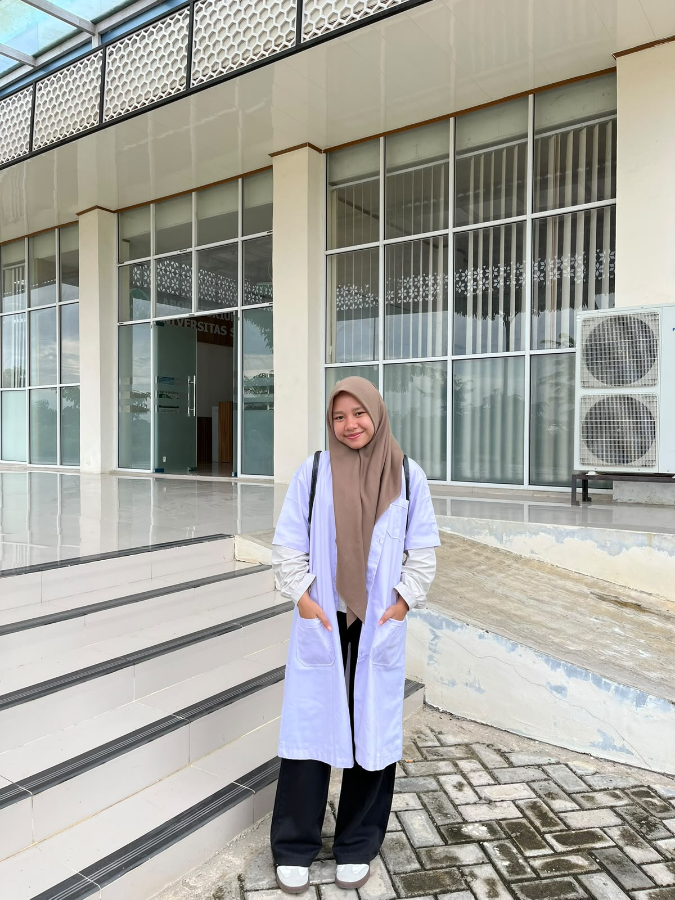

Mahasiswa Informatika yang suka belajar hal baru, senang bikin sesuatu dari nol, dan sedang menikmati langkah pertamanya di dunia teknologi.

About Me
Kenalan dulu sebelum lanjut scroll.
Halo, aku Nazwa Syakilla, lahir di Karang Baru pada 29 Januari 2007. Aku berasal dari Aceh Tamiang, tepatnya di Kecamatan Rantau.
Aku orangnya introvert. Di tempat ramai atau saat bertemu orang baru, aku lebih banyak diam dan mengamati. Tapi kalau sudah bertemu orang yang tepat, sisi extrovert-ku mulai keluar. Aku bisa jadi cerewet banget, ketawa lepas, dan susah berhenti ngobrol.
Aku orang yang santai, tapi punya rasa penasaran yang besar. Kalau ada hal baru, aku pasti ingin mencobanya, apalagi kalau berhubungan dengan teknologi. Setiap kali membuka website atau menggunakan aplikasi, aku selalu bertanya-tanya, “Ini dibuatnya gimana, ya?” Rasa penasaran itulah yang membawaku memilih Informatika.
Di luar kuliah, aku suka main game dengan santai, membaca Wattpad karena alur ceritanya bisa membuatku merasa ikut hidup di dalam cerita, dan maraton nonton drachin. Hal-hal itu bikin aku rileks. Untuk makanan, nasi goreng dan sate adalah favoritku.
Aku percaya bahwa belajar sedikit demi sedikit, tetapi konsisten, lebih baik daripada menunggu semuanya sempurna. Website ini adalah salah satu hasil dari proses belajarku, dan aku bangga bisa membuatnya sendiri.
Hobbies & Favorites
Hal-hal yang bikin harikuku lebih seru.
Playing Games
Main game itu cara favoritku melepas penat. Selain seru, game juga bikin aku penasaran gimana sih cara membuatnya.
Reading Wattpad
Aku suka tenggelam dalam cerita di Wattpad. Dari situ aku belajar menyusun alur dan membayangkan banyak dunia.
Watching Drachin
Nonton drama Chinese adalah hiburan favoritku, terutama untuk maraton di akhir pekan.
🍽️ Favorite Foods
Why I Chose Informatics
Enam alasan kenapa aku memilih jurusan ini.
Technology is everywhere
Hampir semua bidang sekarang bergantung pada teknologi, dari pendidikan sampai kesehatan. Aku ingin jadi bagian dari orang yang membuatnya.
Inspired by games
Karena suka main game, aku jadi penasaran bagaimana game dibuat. Rasa penasaran itu yang mendorongku belajar pemrograman.
I love solving problems
Aku senang menyusun langkah demi langkah sampai masalah selesai. Pemrograman terasa seperti teka-teki yang seru.
Build my own ideas
Dengan Informatika, ide di kepala bisa jadi nyata, seperti website, aplikasi, atau sistem yang berguna bagi orang lain.
Wide career options
Lulusan Informatika bisa bekerja di banyak bidang, jadi aku punya banyak pilihan untuk masa depanku.
Always something new
Teknologi terus berkembang, jadi aku tidak akan pernah kehabisan hal baru untuk dipelajari.
My Goals
Tujuanku masuk Informatika dan apa yang ingin aku capai.
🌱 Short term
- Menguasai dasar HTML, CSS, dan JavaScript
- Belajar logika pemrograman dengan baik
- Membuat proyek-proyek kecil sendiri
🌿 Mid term
- Belajar PHP, database, dan framework
- Membuat website atau aplikasi yang bermanfaat
- Ikut lomba, organisasi, atau proyek tim
🌳 Long term
- Menjadi developer yang profesional
- Membuat karya teknologi yang berguna bagi orang banyak
- Membanggakan orang tua dan keluargaku
My Journey
Perjalananku sejauh ini.
Lahir di Karang Baru pada 29 Januari. Awal dari semuanya.
Mulai penasaran dengan cara kerja game, komputer, internet, dan aplikasi di sekitarku.
Memutuskan belajar Informatika untuk mengubah rasa penasaran menjadi kemampuan nyata.
Membuat website profil pertamaku dengan HTML dan CSS, lalu menjalankannya di localhost XAMPP.
Belajar JavaScript, PHP, dan database, lalu membuat proyek yang lebih besar.
Photo Gallery
Beberapa momen dan foto tentang aku.



Small steps every day will take me far.
Motto belajarku